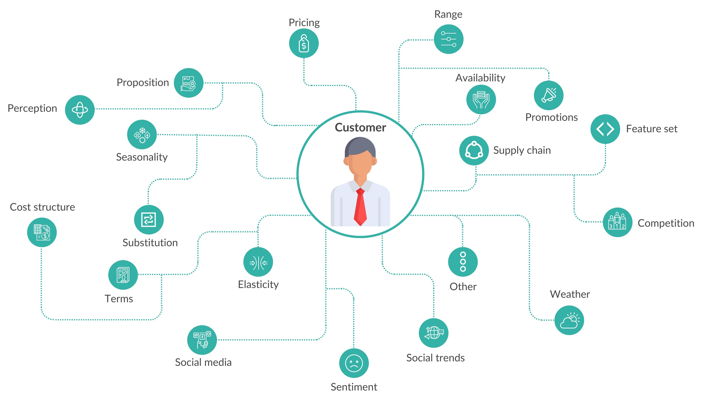

Fashion Is Broken, and Science Is Fixing It
Fashion’s long agony dates back to way before Covid — to be sure, the list of fashion-related bankruptcies is now getting longer every day thus accelerating its previous trend, but the root causes are not new. Traditional fashion practice is dead. Time is ripe for scientific overhaul of the industry. Bad for the environment, inaccurately priced based on cost-plus (!), and overly focused on image & perception at the expense of execution, the industry has long been an accident waiting to happen. After having collected and processed data on over 1 billion people, 10 million products and $100 billion in baskets spanning across many industries in my job at Evo, I still find fashion to be comparatively inefficient (and therefore interesting!). I show how the 5 core fashion processes are broken, and suggest how science is finally providing new answers to fix them. For many fashion companies, this would require a complete transformation of their current management practice; just in the past year, I have met 20+ global CEOs and many were utterly shocked at these ideas! Meanwhile, however, to some readers, this may sound very surprising.